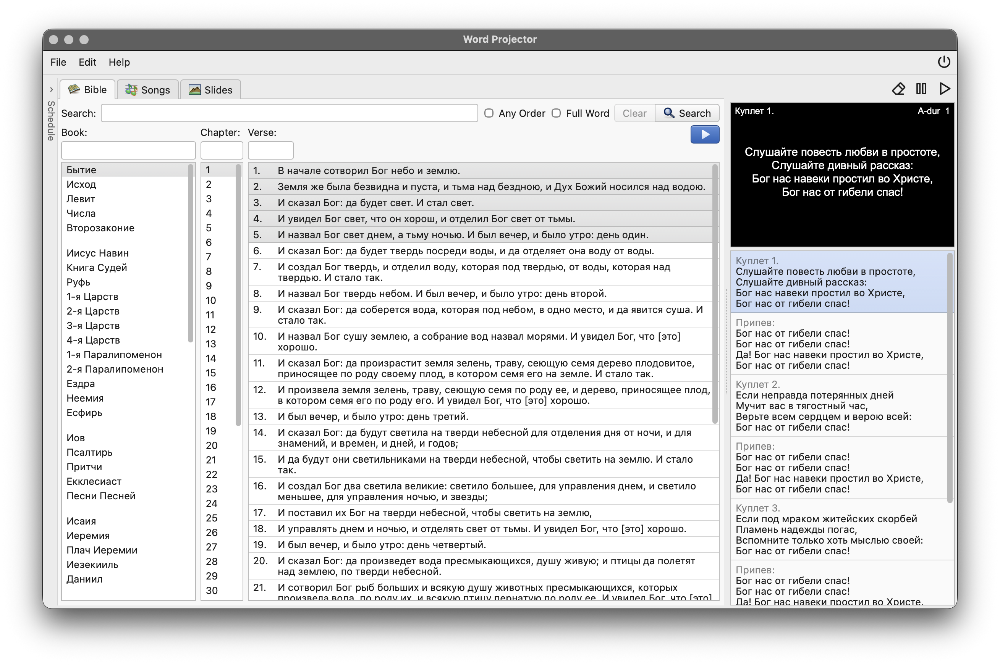

Word Projector
Church projection software to display Bible, Songs, or Slide shows on one or more screens.
For macOS, Windows and Linux. Free and open source.

Church projection software to display Bible, Songs, or Slide shows on one or more screens.
For macOS, Windows and Linux. Free and open source.
